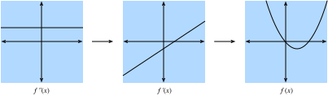
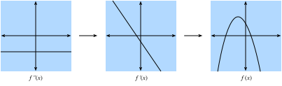
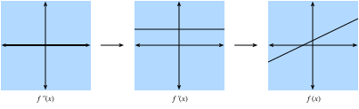

22.3. 单变量微积分¶
在 2.4节 中，我们看到了微分学的基本要素。本节将更深入地探讨微积分的基础知识，以及如何在机器学习的背景下理解和应用它们。
22.3.1. 微分学¶
微分学从根本上研究的是函数在微小变化下如何表现。为了看清这一点为何对深度学习如此核心，让我们考虑一个例子。
假设我们有一个深度神经网络，为方便起见，把其中的权重连结成一个向量 \(\mathbf{w} = (w_1, \ldots, w_n)\)。给定一个训练数据集，我们考虑神经网络在该数据集上的损失，将其记作 \(\mathcal{L}(\mathbf{w})\)。
这个函数极其复杂，它编码了给定架构下所有可能的模型在该数据集上的表现，因此几乎无法判断哪一组权重 \(\mathbf{w}\) 能使损失最小。于是，在实践中，我们通常先随机初始化权重，然后迭代地朝使损失下降得尽可能快的方向迈出小步。
问题于是变成表面上同样不简单的问题：我们如何找到使权重下降得尽可能快的方向？为了深入探讨，让我们先考察只有一个权重的情形：\(L(\mathbf{w}) = L(x)\)，其中 \(x\) 是一个实数值。
让我们取 \(x\)，并试着理解把它改变一个很小的量、变成 \(x + \epsilon\) 时会发生什么。如果想具体一点，可以想一个像 \(\epsilon = 0.0000001\) 这样的数。为了帮助直观理解，我们在 \([0, 3]\) 上画一个示例函数 \(f(x) = \sin(x^x)\)。
%matplotlib inline
import torch
from IPython import display
from d2l import torch as d2l
torch.pi = torch.acos(torch.zeros(1)).item() * 2 # Define pi in torch
# Plot a function in a normal range
x_big = torch.arange(0.01, 3.01, 0.01)
ys = torch.sin(x_big**x_big)
d2l.plot(x_big, ys, 'x', 'f(x)')
%matplotlib inline
from IPython import display
from mxnet import np, npx
from d2l import mxnet as d2l
npx.set_np()
# Plot a function in a normal range
x_big = np.arange(0.01, 3.01, 0.01)
ys = np.sin(x_big**x_big)
d2l.plot(x_big, ys, 'x', 'f(x)')
%matplotlib inline
import tensorflow as tf
from IPython import display
from d2l import tensorflow as d2l
tf.pi = tf.acos(tf.zeros(1)).numpy() * 2 # Define pi in TensorFlow
# Plot a function in a normal range
x_big = tf.range(0.01, 3.01, 0.01)
ys = tf.sin(x_big**x_big)
d2l.plot(x_big, ys, 'x', 'f(x)')
在这样大的尺度上，函数的行为并不简单。然而，如果我们把范围缩小到像 \([1.75,2.25]\) 这样更小的区间，就会看到图像变得简单得多。
# Plot a the same function in a tiny range
x_med = torch.arange(1.75, 2.25, 0.001)
ys = torch.sin(x_med**x_med)
d2l.plot(x_med, ys, 'x', 'f(x)')
# Plot a the same function in a tiny range
x_med = np.arange(1.75, 2.25, 0.001)
ys = np.sin(x_med**x_med)
d2l.plot(x_med, ys, 'x', 'f(x)')
# Plot a the same function in a tiny range
x_med = tf.range(1.75, 2.25, 0.001)
ys = tf.sin(x_med**x_med)
d2l.plot(x_med, ys, 'x', 'f(x)')
把这一做法推向极端：如果我们放大到一个极小的片段，函数的行为会变得简单得多，它就是一条直线。
# Plot a the same function in a tiny range
x_small = torch.arange(2.0, 2.01, 0.0001)
ys = torch.sin(x_small**x_small)
d2l.plot(x_small, ys, 'x', 'f(x)')
# Plot a the same function in a tiny range
x_small = np.arange(2.0, 2.01, 0.0001)
ys = np.sin(x_small**x_small)
d2l.plot(x_small, ys, 'x', 'f(x)')
# Plot a the same function in a tiny range
x_small = tf.range(2.0, 2.01, 0.0001)
ys = tf.sin(x_small**x_small)
d2l.plot(x_small, ys, 'x', 'f(x)')
这就是单变量微积分的关键观察：在足够小的范围内，熟悉函数的行为可以用一条直线来建模。这意味着，对大多数函数而言，可以合理地期望：当我们把函数的 \(x\) 值移动一点点时，输出 \(f(x)\) 也会移动一点点。我们唯一需要回答的问题是：“与输入的变化相比，输出的变化有多大？是一半？还是两倍？”
于是，我们可以考虑函数输出的变化与输入微小变化之比。形式化地，可以将其写为
这已经足以让我们开始在代码中尝试了。例如，假设我们知道 \(L(x) = x^{2} + 1701(x-4)^3\)，那么可以如下查看该值在点 \(x = 4\) 处有多大。
# Define our function
def L(x):
return x**2 + 1701*(x-4)**3
# Print the difference divided by epsilon for several epsilon
for epsilon in [0.1, 0.001, 0.0001, 0.00001]:
print(f'epsilon = {epsilon:.5f} -> {(L(4+epsilon) - L(4)) / epsilon:.5f}')
# Define our function
def L(x):
return x**2 + 1701*(x-4)**3
# Print the difference divided by epsilon for several epsilon
for epsilon in [0.1, 0.001, 0.0001, 0.00001]:
print(f'epsilon = {epsilon:.5f} -> {(L(4+epsilon) - L(4)) / epsilon:.5f}')
# Define our function
def L(x):
return x**2 + 1701*(x-4)**3
# Print the difference divided by epsilon for several epsilon
for epsilon in [0.1, 0.001, 0.0001, 0.00001]:
print(f'epsilon = {epsilon:.5f} -> {(L(4+epsilon) - L(4)) / epsilon:.5f}')
现在，如果留心观察，我们会注意到这个数的输出可疑地接近 \(8\)。事实上，如果减小 \(\epsilon\)，我们会看到该值逐步接近 \(8\)。因此我们可以正确地得出结论：我们寻求的值（输入的变化能在多大程度上改变输出）在点 \(x=4\) 处应为 \(8\)。数学家编码这一事实的方式是
稍作一点历史题外话：在神经网络研究的最初几十年里，科学家使用这种算法（有限差分法）来评估损失函数在小扰动下如何变化：只需改变权重，看看损失如何变化。这在计算上是低效的，因为要查看一个变量的单次变化如何影响损失，需要对损失函数求值两次。如果我们试图对区区几千个参数这样做，就需要在整个数据集上对网络进行数千次求值！直到 1986 年，Rumelhart et al. (1988) 引入的反向传播算法才提供了解决之道：它能在与在整个数据集上对网络做一次预测相同的计算时间内，计算出权重的任何变化合在一起会如何改变损失。
回到我们的例子，这个值 \(8\) 随 \(x\) 的取值不同而不同，因此把它定义为 \(x\) 的函数是合理的。更形式化地说，这种依赖于取值的变率称为导数（derivative），记作
不同的教材会使用不同的导数记号。例如，以下所有记号都表示同一件事：
大多数作者会选定一种记号并坚持使用，然而即便如此也并非必然。最好熟悉所有这些记号。本书将通篇使用 \(\frac{df}{dx}\) 这一记号，除非我们要对复杂表达式求导，此时我们会用 \(\frac{d}{dx}f\) 来写出像
这样的表达式。
通常，再次拆解导数的定义 (22.3.3)，看看当我们对 \(x\) 作微小改变时函数如何变化，在直觉上是很有用的：
最后一个等式值得明确点出。它告诉我们，如果你取任意一个函数并让输入变化一个很小的量，那么输出的变化量就是该很小的量乘以导数。
这样，我们就可以把导数理解为比例因子，它告诉我们输入的变化能在输出中带来多大的变化。
22.3.2. 微积分法则¶
现在我们转向理解如何计算显式函数的导数。完整的微积分形式化处理会从第一性原理推导一切。这里我们不会沉溺于这种诱惑，而是帮助读者理解常见的法则。
22.3.2.1. 常用导数¶
正如 2.4节 中所见，计算导数时，人们往往可以用一系列法则把计算化为少数几个核心函数。为便于查阅，这里再重复一遍。
常数的导数。 \(\frac{d}{dx}c = 0\)。
线性函数的导数。 \(\frac{d}{dx}(ax) = a\)。
幂法则。 \(\frac{d}{dx}x^n = nx^{n-1}\)。
指数函数的导数。 \(\frac{d}{dx}e^x = e^x\)。
对数函数的导数。 \(\frac{d}{dx}\log(x) = \frac{1}{x}\)。
22.3.2.2. 求导法则¶
如果每个导数都需要单独计算并存入表格，微分学将几乎无法进行。数学的一项恩赐是：我们可以推广上述导数，并计算更复杂的导数，比如求 \(f(x) = \log\left(1+(x-1)^{10}\right)\) 的导数。正如 2.4节 中提到的，做到这一点的关键在于，把函数以各种方式组合时会发生什么编纂成规则，其中最重要的是：和、积与复合。
和法则。 \(\frac{d}{dx}\left(g(x) + h(x)\right) = \frac{dg}{dx}(x) + \frac{dh}{dx}(x)\)。
积法则。 \(\frac{d}{dx}\left(g(x)\cdot h(x)\right) = g(x)\frac{dh}{dx}(x) + \frac{dg}{dx}(x)h(x)\)。
链式法则。 \(\frac{d}{dx}g(h(x)) = \frac{dg}{dh}(h(x))\cdot \frac{dh}{dx}(x)\)。
让我们看看如何利用 (22.3.6) 来理解这些法则。对于和法则，考虑如下推理链：
把这个结果与 \(f(x+\epsilon) \approx f(x) + \epsilon \frac{df}{dx}(x)\) 这一事实相比较，我们看到 \(\frac{df}{dx}(x) = \frac{dg}{dx}(x) + \frac{dh}{dx}(x)\)，正如所愿。这里的直觉是：当我们改变输入 \(x\) 时，\(g\) 和 \(h\) 分别以 \(\frac{dg}{dx}(x)\) 和 \(\frac{dh}{dx}(x)\) 共同贡献于输出的变化。
积法则更为微妙，需要对这些表达式的处理方式作一个新的观察。我们像之前一样从 (22.3.6) 出发：
这与上面所做的计算相似，确实我们看到答案（\(\frac{df}{dx}(x) = g(x)\frac{dh}{dx}(x) + \frac{dg}{dx}(x)h(x)\)）就位于 \(\epsilon\) 旁边，但还多出一个大小为 \(\epsilon^{2}\) 的项。我们将其称为高阶项（higher-order term），因为 \(\epsilon^2\) 的幂次高于 \(\epsilon^1\) 的幂次。我们将在后面的章节中看到，有时我们希望跟踪这些项，不过现在请注意：如果 \(\epsilon = 0.0000001\)，那么 \(\epsilon^{2}= 0.0000000000001\)，要小得多。当 \(\epsilon \rightarrow 0\) 时，我们可以放心地忽略高阶项。作为本附录的一般约定，我们将用“\(\approx\)”表示两个表达式在忽略高阶项的意义下相等。然而，如果希望更形式化一些，可以考察差商
并看到当 \(\epsilon \rightarrow 0\) 时，右端的项也趋于零。
最后，对于链式法则，我们同样可以像之前一样利用 (22.3.6) 推进，并看到
其中第二行我们把函数 \(g\) 的输入（\(h(x)\)）看作被微小量 \(\epsilon \frac{dh}{dx}(x)\) 平移了。
这些法则为我们提供了一套灵活的工具，几乎可以计算任何想要的表达式。例如，
其中每一行依次使用了以下法则：
链式法则与对数函数的导数。
和法则。
常数的导数、链式法则与幂法则。
和法则、线性函数的导数、常数的导数。
做这个例子之后，有两件事应该清楚了：
任何能用和、积、常数、幂、指数与对数写出的函数，都可以机械地按这些法则计算导数。
让人来执行这些法则可能既繁琐又容易出错！
值得庆幸的是，这两点合在一起提示了前进的方向：这正是机械化的完美候选！事实上，本节稍后我们将再次讨论的反向传播，正是这样的机械化。
22.3.2.3. 线性近似¶
处理导数时，对上面所用的近似作几何解释往往很有用。特别地，请注意等式
用一条经过点 \((x, f(x))\)、斜率为 \(\frac{df}{dx}(x)\) 的直线来近似 \(f\) 的值。据此我们说，导数给出了函数 \(f\) 的线性近似，如下图所示：
# Compute sin
xs = torch.arange(-torch.pi, torch.pi, 0.01)
plots = [torch.sin(xs)]
# Compute some linear approximations. Use d(sin(x))/dx = cos(x)
for x0 in [-1.5, 0.0, 2.0]:
plots.append(torch.sin(torch.tensor(x0)) + (xs - x0) *
torch.cos(torch.tensor(x0)))
d2l.plot(xs, plots, 'x', 'f(x)', ylim=[-1.5, 1.5])
# Compute sin
xs = np.arange(-np.pi, np.pi, 0.01)
plots = [np.sin(xs)]
# Compute some linear approximations. Use d(sin(x)) / dx = cos(x)
for x0 in [-1.5, 0, 2]:
plots.append(np.sin(x0) + (xs - x0) * np.cos(x0))
d2l.plot(xs, plots, 'x', 'f(x)', ylim=[-1.5, 1.5])
# Compute sin
xs = tf.range(-tf.pi, tf.pi, 0.01)
plots = [tf.sin(xs)]
# Compute some linear approximations. Use d(sin(x))/dx = cos(x)
for x0 in [-1.5, 0.0, 2.0]:
plots.append(tf.sin(tf.constant(x0)) + (xs - x0) *
tf.cos(tf.constant(x0)))
d2l.plot(xs, plots, 'x', 'f(x)', ylim=[-1.5, 1.5])
22.3.2.4. 高阶导数¶
现在让我们做一件表面上可能有些奇怪的事。取一个函数 \(f\) 并计算导数 \(\frac{df}{dx}\)。这给出了 \(f\) 在任意点处的变率。
然而，导数 \(\frac{df}{dx}\) 本身可以看作一个函数，因此没有什么能阻止我们对 \(\frac{df}{dx}\) 再求导，得到 \(\frac{d^2f}{dx^2} = \frac{df}{dx}\left(\frac{df}{dx}\right)\)。我们把这称为 \(f\) 的二阶导数。这个函数是 \(f\) 的变率的变率，换句话说，是变化率本身如何变化。我们可以反复求导任意多次，得到所谓的 \(n\) 阶导数。为保持记号简洁，我们将 \(n\) 阶导数记为
让我们试着理解为什么这是一个有用的概念。下面我们可视化 \(f^{(2)}(x)\)、\(f^{(1)}(x)\) 和 \(f(x)\)。
首先，考虑二阶导数 \(f^{(2)}(x)\) 为正常数的情形。这意味着一阶导数的斜率为正。因此，一阶导数 \(f^{(1)}(x)\) 可能起初为负，在某点变为零，最后变为正。这告诉了我们原函数 \(f\) 的斜率，因而函数 \(f\) 本身先递减、变平、再递增。换句话说，函数 \(f\) 向上弯曲，并且只有一个最小值，如 图22.3.1 所示。

图22.3.1 如果假设二阶导数为正常数，那么一阶导数递增，这意味着函数本身有一个最小值。¶
其次，如果二阶导数为负常数，那意味着一阶导数递减。这意味着一阶导数可能起初为正，在某点变为零，然后变为负。因此，函数 \(f\) 本身先递增、变平、再递减。换句话说，函数 \(f\) 向下弯曲，并且只有一个最大值，如 图22.3.2 所示。

图22.3.2 如果假设二阶导数为负常数，那么一阶导数递减，这意味着函数本身有一个最大值。¶
第三，如果二阶导数始终为零，那么一阶导数永远不会改变——它是常数！这意味着 \(f\) 以固定的速率递增（或递减），此时 \(f\) 本身就是一条直线，如 图22.3.3 所示。

图22.3.3 如果假设二阶导数为零，那么一阶导数为常数，这意味着函数本身是一条直线。¶
总而言之，二阶导数可以解释为描述函数 \(f\) 弯曲的方式。正二阶导数导致向上弯曲，负二阶导数意味着 \(f\) 向下弯曲，而零二阶导数意味着 \(f\) 完全不会弯曲。
让我们再向前推进一步。考虑函数 \(g(x) = ax^{2}+ bx + c\)。于是可以算出
如果我们心中有某个原函数 \(f(x)\)，可以计算它的前两阶导数，并求出使它们与该计算结果相匹配的 \(a, b\) 和 \(c\) 的取值。与上一节我们看到一阶导数给出最佳直线近似类似，这种构造给出了最佳二次近似。让我们对 \(f(x) = \sin(x)\) 可视化这一过程。
# Compute sin
xs = torch.arange(-torch.pi, torch.pi, 0.01)
plots = [torch.sin(xs)]
# Compute some quadratic approximations. Use d(sin(x)) / dx = cos(x)
for x0 in [-1.5, 0.0, 2.0]:
plots.append(torch.sin(torch.tensor(x0)) + (xs - x0) *
torch.cos(torch.tensor(x0)) - (xs - x0)**2 *
torch.sin(torch.tensor(x0)) / 2)
d2l.plot(xs, plots, 'x', 'f(x)', ylim=[-1.5, 1.5])
# Compute sin
xs = np.arange(-np.pi, np.pi, 0.01)
plots = [np.sin(xs)]
# Compute some quadratic approximations. Use d(sin(x)) / dx = cos(x)
for x0 in [-1.5, 0, 2]:
plots.append(np.sin(x0) + (xs - x0) * np.cos(x0) -
(xs - x0)**2 * np.sin(x0) / 2)
d2l.plot(xs, plots, 'x', 'f(x)', ylim=[-1.5, 1.5])
# Compute sin
xs = tf.range(-tf.pi, tf.pi, 0.01)
plots = [tf.sin(xs)]
# Compute some quadratic approximations. Use d(sin(x)) / dx = cos(x)
for x0 in [-1.5, 0.0, 2.0]:
plots.append(tf.sin(tf.constant(x0)) + (xs - x0) *
tf.cos(tf.constant(x0)) - (xs - x0)**2 *
tf.sin(tf.constant(x0)) / 2)
d2l.plot(xs, plots, 'x', 'f(x)', ylim=[-1.5, 1.5])
我们将在下一节把这一思想推广为泰勒级数。
22.3.2.5. 泰勒级数¶
如果在点 \(x_0\) 处给定前 \(n\) 阶导数的值，即 \(\left\{ f(x_0), f^{(1)}(x_0), f^{(2)}(x_0), \ldots, f^{(n)}(x_0) \right\}\)，那么泰勒级数（Taylor series）提供了一种近似函数 \(f(x)\) 的方法。其思路是找到一个 \(n\) 次多项式，使其在 \(x_0\) 处与所有给定的导数相匹配。
我们在上一节看到了 \(n=2\) 的情形，稍作代数运算即可得到
如上所示，分母中的 \(2\) 是为了抵消对 \(x^2\) 求两次导数时得到的 \(2\)，而对其他项求两次导数时结果都为零。同样的逻辑也适用于一阶导数和函数值本身。
如果把这一逻辑进一步推到 \(n=3\)，我们会得到
其中 \(6 = 3 \times 2 = 3!\) 来自对 \(x^3\) 求三次导数后出现在前面的常数。
此外，我们可以通过
得到一个 \(n\) 次多项式，其中记号
事实上，\(P_n(x)\) 可以看作对函数 \(f(x)\) 的最佳 \(n\) 次多项式近似。
我们并不打算深入探讨上述近似的误差，但值得提一下无限极限的情形。此时，对于性质良好的函数（称为实解析函数），例如 \(\cos(x)\) 或 \(e^{x}\)，我们可以写出无穷多项，并精确地近似同一个函数
以 \(f(x) = e^{x}\) 为例。由于 \(e^{x}\) 是其自身的导数，我们知道 \(f^{(n)}(x) = e^{x}\)。因此，\(e^{x}\) 可以通过在 \(x_0 = 0\) 处取泰勒级数来重构，即
让我们看看这在代码中如何工作，并观察提高泰勒近似的阶数如何使我们更接近目标函数 \(e^x\)。
# Compute the exponential function
xs = torch.arange(0, 3, 0.01)
ys = torch.exp(xs)
# Compute a few Taylor series approximations
P1 = 1 + xs
P2 = 1 + xs + xs**2 / 2
P5 = 1 + xs + xs**2 / 2 + xs**3 / 6 + xs**4 / 24 + xs**5 / 120
d2l.plot(xs, [ys, P1, P2, P5], 'x', 'f(x)', legend=[
"Exponential", "Degree 1 Taylor Series", "Degree 2 Taylor Series",
"Degree 5 Taylor Series"])
# Compute the exponential function
xs = np.arange(0, 3, 0.01)
ys = np.exp(xs)
# Compute a few Taylor series approximations
P1 = 1 + xs
P2 = 1 + xs + xs**2 / 2
P5 = 1 + xs + xs**2 / 2 + xs**3 / 6 + xs**4 / 24 + xs**5 / 120
d2l.plot(xs, [ys, P1, P2, P5], 'x', 'f(x)', legend=[
"Exponential", "Degree 1 Taylor Series", "Degree 2 Taylor Series",
"Degree 5 Taylor Series"])
# Compute the exponential function
xs = tf.range(0, 3, 0.01)
ys = tf.exp(xs)
# Compute a few Taylor series approximations
P1 = 1 + xs
P2 = 1 + xs + xs**2 / 2
P5 = 1 + xs + xs**2 / 2 + xs**3 / 6 + xs**4 / 24 + xs**5 / 120
d2l.plot(xs, [ys, P1, P2, P5], 'x', 'f(x)', legend=[
"Exponential", "Degree 1 Taylor Series", "Degree 2 Taylor Series",
"Degree 5 Taylor Series"])
泰勒级数有两个主要应用：
理论应用：当我们试图理解一个过于复杂的函数时，使用泰勒级数常常能把它转化为可以直接处理的多项式。
数值应用：有些函数（如 \(e^{x}\) 或 \(\cos(x)\)）机器难以计算。机器可以存储固定精度的数值表（这种做法很常见），但这仍然留下诸如“\(\cos(1)\) 的第 1000 位数字是什么？”这样的问题。泰勒级数往往有助于回答这类问题。
22.3.3. 小结¶
导数可以用来表达当我们对输入作微小改变时函数如何变化。
基本导数可以借助求导法则组合起来，构造出任意复杂的导数。
导数可以迭代求取，得到二阶或更高阶导数。阶数每提高一次，就提供关于函数行为的更精细信息。
利用单个数据样例的导数信息，我们可以用泰勒级数得到的多项式来近似性质良好的函数。
22.3.4. 习题¶
\(x^3-4x+1\) 的导数是什么？
\(\log(\frac{1}{x})\) 的导数是什么？
判断对错：如果 \(f'(x) = 0\)，那么 \(f\) 在 \(x\) 处取得最大值或最小值？
对于 \(x\ge0\)，\(f(x) = x\log(x)\) 的最小值在哪里（这里假设 \(f\) 在 \(f(0)\) 处取极限值 \(0\)）？